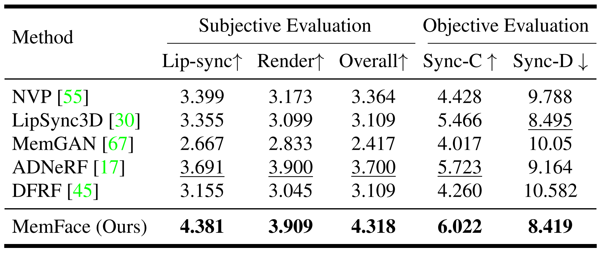
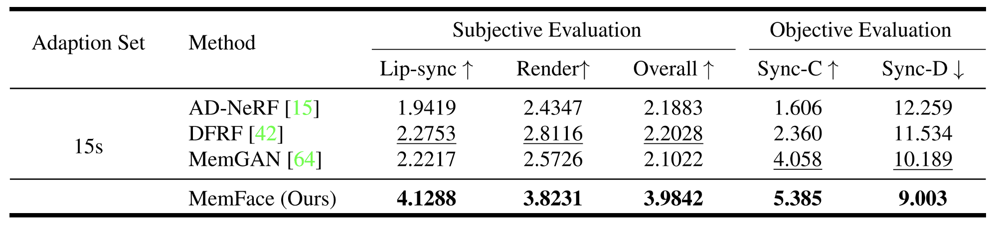
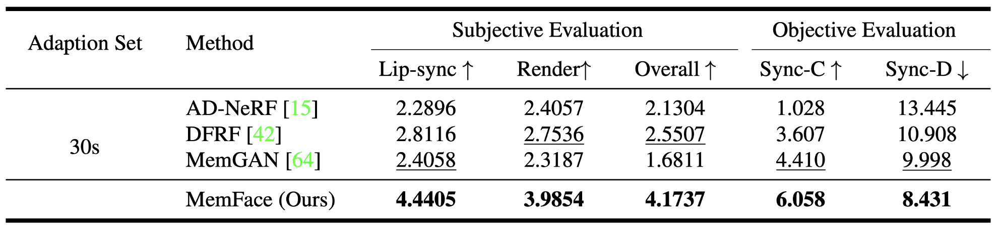

1 Shanghai Jiao Tong University
2 Microsoft Research Asia
3 Microsoft Azure Speech
| English | German | French |
| Russian | Spanish | Chinese |
Talking face generation aims at generating photo-realistic video portraits of a target person driven by input audio. Due to its nature of one-to-many mapping from the input audio to the output video (e.g., one speech content may have multiple feasible visual appearances), learning a deterministic mapping like previous works brings ambiguity during training, and thus causes inferior visual results. Although this one-to-many mapping could be alleviated in part by a two-stage framework (i.e., an audio-to-expression model followed by a neural-rendering model), it is still insufficient since the prediction is produced without enough information (e.g., emotions, wrinkles, etc.).
In this paper, we propose MemFace to complement the missing information with an implicit memory and an explicit memory that follow the sense of the two stages respectively. More specifically, the implicit memory is employed in the audio-to-expression model to capture high-level semantics in the audio-expression shared space, while the explicit memory is employed in the neural-rendering model to help synthesize pixel-level details. Our experimental results show that our proposed MemFace surpasses all the state-of-the-art results across multiple scenarios consistently and significantly.
To alleviate the one-to-many mapping difficulty, we propose to complement the missing information with memories. To this end, an implicit memory is introduced to the audio-to-expression model to complement the semantically-aligned information, while an explicit memory is introduced to the neural-rendering model to retrieve the personalized visual details.
With the same input audio, we compare our synthesized results with the following works: NVP, MemGAN, ADNeRF, DFRF and LipSync3D.
| Quantitative comparison with the state-of-the-art methods. Our MemFace achieves the best subjective and objective quality by a large margin. | |
|  | |
Since we alleviate the one-to-many mapping problem and make the prediction easier, we also adapt our model to new speakers with few adaption data and compare it to the state-of-the-art methods with the same setting.
| We adapt our model and state-of-the-art methods to new speakers with 15s adaption data. |
|  |
| We adapt our model and state-of-the-art methods to new speakers with 30s adaption data. |
|  |
@article{tang2022memories,
title={Memories are One-to-Many Mapping Alleviators in Talking Face Generation},
author={Tang, Anni and He, Tianyu and Tan, Xu and Ling, Jun and Li, Runnan and Zhao, Sheng and Song, Li and Bian, Jiang},
journal={arXiv preprint arXiv:2212.05005},
year={2022}
}